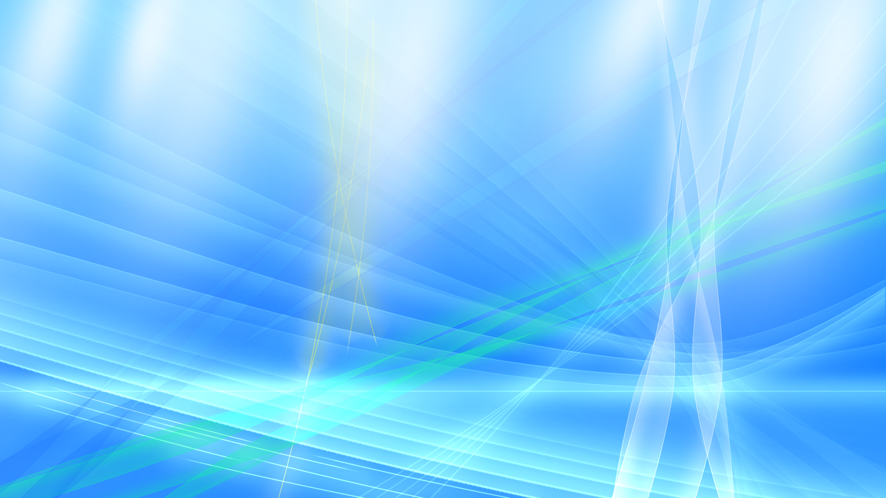

Wallpapers
Explore wallpapers inspired by Y2K,
early 2000s computers, and futuristic design.
Wallpapers may be used freely.
Providing credit is not required, but it is appreciated.
※ Redistribution while falsely claiming ownership or authorship of the wallpapers is strictly prohibited.

aurora1-L
A wallpaper inspired by Windows 7 Vista, featuring bright colors and futuristic visuals.
View Wallpaper